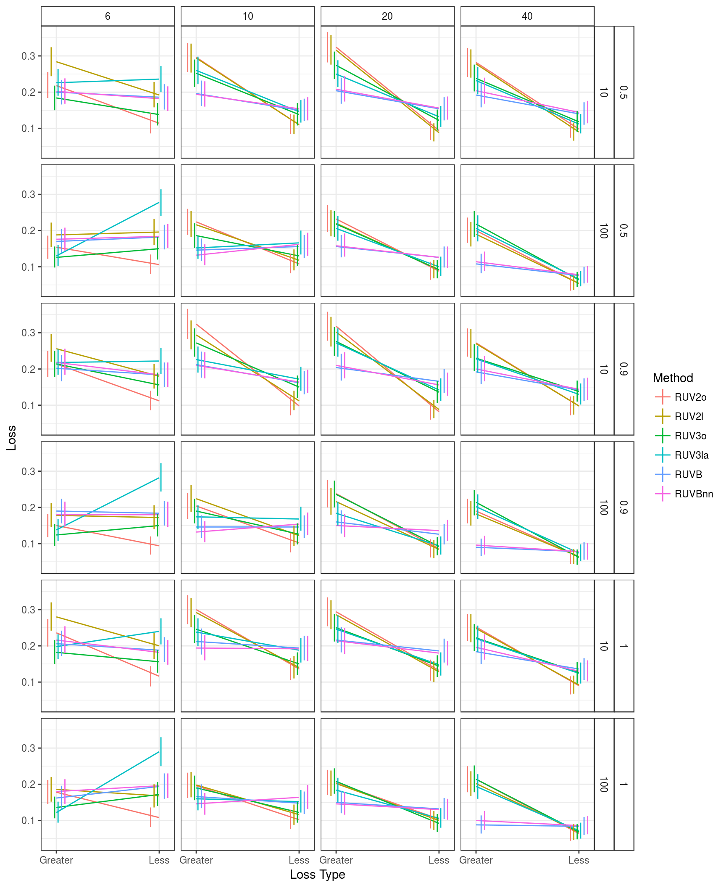
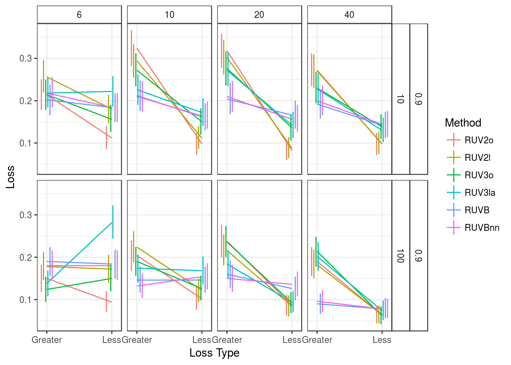

I calculate bootstrap confidence intervals for losses: Proportion of times coverage is less than 0.9 (Less) and proportion of times coverage is greater than 0.975 (Greater). I calculate these intervals for the best performing methods: RUVB, RUVBnn, RUV2o, RUV2l, RUV3o, and RUV3la.
Here, I explore six mean methods:
I estimate the variances with the mean methods in different combinations. The key for this is:
library(tidyverse)
library(stringr)
covdat <- read_csv(file = "../../reproduce_ruv3/Output/sims_out/cov_mat2.csv")
left_vals <- toupper(str_replace(str_extract(names(covdat)[-(1:5)], "^.+_"), "_", ""))
right_vals <- str_replace(str_extract(names(covdat)[-(1:5)], "_.+$"), "_", "")
name_vec <- c("Seed", "Pi0", "SampleSize", "NControls", "Poisthin",
paste0(left_vals, right_vals))
name_vec[(length(name_vec) - 3):length(name_vec)] <-
paste0("RUVB", stringr::str_replace(string = names(covdat)[(length(name_vec) - 3):length(name_vec)],
pattern = "(ruvb)(.*+)", replace = "\\2"))
names(covdat) <- name_vec
covdat <- select(covdat, Pi0, SampleSize, NControls, OLSo, RUV2o,
RUV2l, RUV3o, RUV3la, RUVB, RUVBnn)
longdat <- gather(data = covdat, key = "Method", value = "Coverage", -(1:3))Here is a loss function plot with only the best methods.
## Now the loss function plot
less9 <- function(x) {
s1 <- mean(x < 0.9)
}
g0975 <- function(x) {
s2 <- mean(x > 0.975)
}
boot_loss <- function(cov_vec, bootmax = 5000) {
gvec <- rep(NA, bootmax)
lvec <- rep(NA, bootmax)
for (index in 1:bootmax) {
new_cov <- sample(cov_vec, replace = TRUE)
gvec[index] <- g0975(new_cov)
lvec[index] <- less9(new_cov)
}
intvec <- c(quantile(lvec, probs = c(0.025, 0.975)), quantile(gvec, probs = c(0.025, 0.975)))
return(intvec)
}
pi_vec <- unique(longdat$Pi0)
samp_vec <- unique(longdat$SampleSize)
nc_vec <- unique(longdat$NControls)
method_vec <- unique(longdat$Method)
cond_df <- as_data_frame(expand.grid(pi_vec, samp_vec, nc_vec, method_vec))
names(cond_df) <- c("Pi0", "SampleSize", "NControls", "Method")
cond_df$Less <- rep(NA, nrow(cond_df))
cond_df$Greater <- rep(NA, nrow(cond_df))
cond_df$LessLower <- rep(NA, nrow(cond_df))
cond_df$LessUpper <- rep(NA, nrow(cond_df))
cond_df$GreaterLower <- rep(NA, nrow(cond_df))
cond_df$GreaterUpper <- rep(NA, nrow(cond_df))
for (index in 1:nrow(cond_df)) {
tempdat <- filter(longdat, Pi0 == cond_df$Pi0[index], SampleSize == cond_df$SampleSize[index],
NControls == cond_df$NControls[index], Method == cond_df$Method[index])
qvec <- boot_loss(tempdat$Coverage)
cond_df$Less[index] <- less9(tempdat$Coverage)
cond_df$Greater[index] <- g0975(tempdat$Coverage)
cond_df$LessLower[index] <- qvec[1]
cond_df$LessUpper[index] <- qvec[2]
cond_df$GreaterLower[index] <- qvec[3]
cond_df$GreaterUpper[index] <- qvec[4]
}
tempdf <- gather(cond_df, key = "LossType", value = "Loss", Less, Greater)
tempdf$Lower <- tempdf$LessLower
tempdf$Lower[tempdf$LossType == "Greater"] <- tempdf$GreaterLower[tempdf$LossType == "Greater"]
tempdf$Upper <- tempdf$LessUpper
tempdf$Upper[tempdf$LossType == "Greater"] <- tempdf$GreaterUpper[tempdf$LossType == "Greater"]
lossdf <- select(tempdf, Pi0, SampleSize, NControls, Method, LossType, Loss, Lower, Upper)
pl <- ggplot(data = filter(lossdf, Method != "OLSo"), mapping = aes(x = LossType, y = Loss,
group = Method,
color = Method)) +
geom_line() +
facet_grid(Pi0 + NControls ~ SampleSize) +
theme_bw() +
theme(strip.background = element_rect(fill="white")) +
xlab("Loss Type") +
ylab("Loss") +
coord_cartesian(xlim = c(1.45, 1.55)) +
geom_linerange(mapping = aes(ymin = Lower, ymax = Upper),
position = position_dodge(width = 0.2))
print(pl)
In the above plot, I jittered the confidence region (only along the x-axis, not the y-axis of course) for viewability.
The results are very similar for the different values of Pi0. Looking at just Pi0 = 0.9, we have:
pl <- ggplot(data = filter(lossdf, Method != "OLSo", Pi0 == 0.9), mapping = aes(x = LossType, y = Loss,
group = Method,
color = Method)) +
geom_line() +
facet_grid(Pi0 + NControls ~ SampleSize) +
theme_bw() +
theme(strip.background = element_rect(fill="white")) +
xlab("Loss Type") +
ylab("Loss") +
coord_cartesian(xlim = c(1.45, 1.55)) +
geom_linerange(mapping = aes(ymin = Lower, ymax = Upper),
position = position_dodge(width = 0.2))
print(pl)
sessionInfo()## R version 3.3.2 (2016-10-31)
## Platform: x86_64-pc-linux-gnu (64-bit)
## Running under: Ubuntu 16.04.2 LTS
##
## locale:
## [1] LC_CTYPE=en_US.UTF-8 LC_NUMERIC=C
## [3] LC_TIME=en_US.UTF-8 LC_COLLATE=en_US.UTF-8
## [5] LC_MONETARY=en_US.UTF-8 LC_MESSAGES=en_US.UTF-8
## [7] LC_PAPER=en_US.UTF-8 LC_NAME=C
## [9] LC_ADDRESS=C LC_TELEPHONE=C
## [11] LC_MEASUREMENT=en_US.UTF-8 LC_IDENTIFICATION=C
##
## attached base packages:
## [1] stats graphics grDevices utils datasets methods base
##
## other attached packages:
## [1] stringr_1.2.0 dplyr_0.5.0 purrr_0.2.2 readr_1.0.0
## [5] tidyr_0.6.1 tibble_1.2 ggplot2_2.2.1 tidyverse_1.1.1
##
## loaded via a namespace (and not attached):
## [1] Rcpp_0.12.10 plyr_1.8.4 forcats_0.2.0 tools_3.3.2
## [5] digest_0.6.12 jsonlite_1.3 lubridate_1.6.0 evaluate_0.10
## [9] nlme_3.1-131 gtable_0.2.0 lattice_0.20-34 psych_1.6.12
## [13] DBI_0.6 yaml_2.1.14 parallel_3.3.2 haven_1.0.0
## [17] xml2_1.1.1 httr_1.2.1 knitr_1.15.1 hms_0.3
## [21] rprojroot_1.2 grid_3.3.2 R6_2.2.0 readxl_0.1.1
## [25] foreign_0.8-67 rmarkdown_1.3 modelr_0.1.0 reshape2_1.4.2
## [29] magrittr_1.5 backports_1.0.5 scales_0.4.1 htmltools_0.3.5
## [33] rvest_0.3.2 assertthat_0.2.0 mnormt_1.5-5 colorspace_1.3-2
## [37] labeling_0.3 stringi_1.1.2 lazyeval_0.2.0 munsell_0.4.3
## [41] broom_0.4.2This site was created with R Markdown